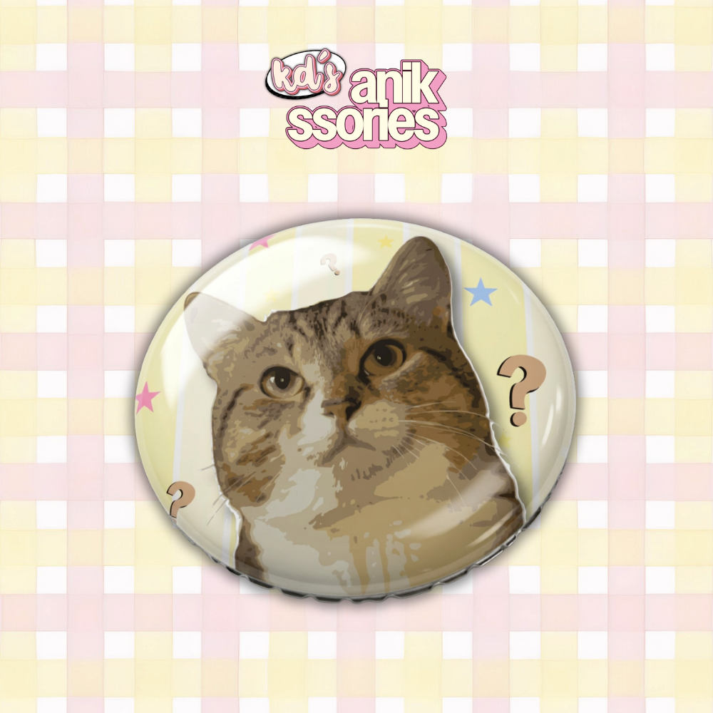
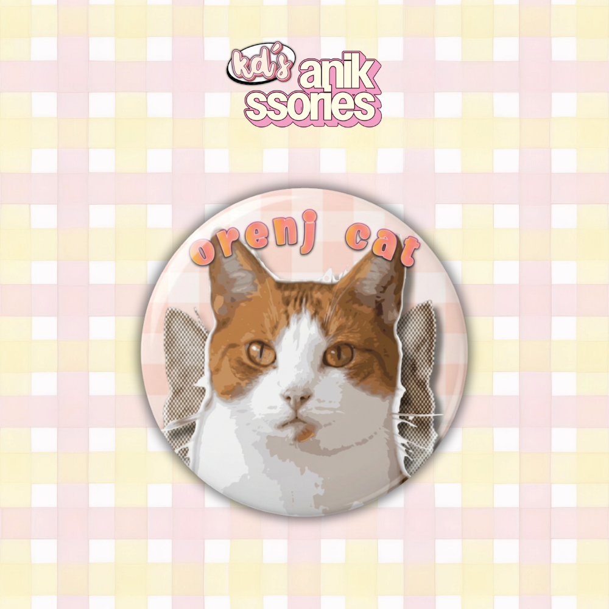
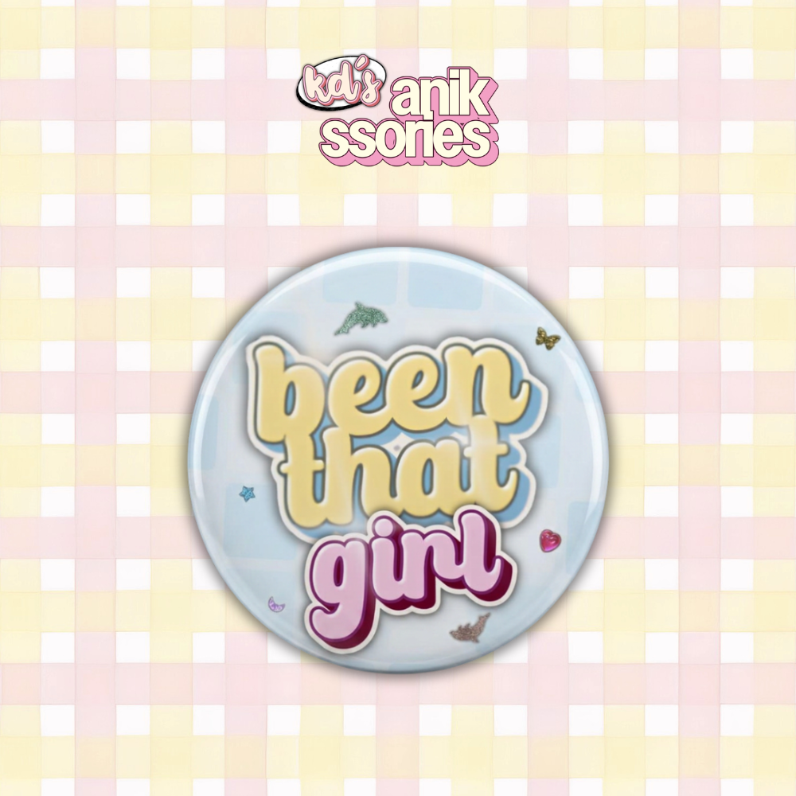

Cat Wondering Button Pin Badge
Php 15
This product features a cat wondering about something, with the background showing a vibrant,
cutesy vibe to make the button pin look like a cute anik-anik.
Size: 1.25 inches
Type: Glossy

Orange Cat Button Pin Badge
Php 15
The product showcases how cute orenj cats are (what we usually call orange cats here).
As an orenj cat lover, let’s appreciate and show how much we love orenj cats!
Size: 1.25 inches
Type: Glossy

BTG (been that girl) Button Pin Badge
Php 15
“I been that girl”
This product features a lyric I got from the song BTG from KiiiKiii.
You’re always that girl and no one can change it!
Size: 1.25 inches
Type: Glossy

SPH Sticker Set
Php 30
This product is perfect for decorating your journals, diaries, planners, notebooks, laptop, and tumbler.
Each design comes from the title of a K-pop song, making it perfect for someone who enjoys K-pop.

Lotus Ribbon Phone Charm
Php 40
This phone charm features a ribbon bead, a four-leaf clover bead, a red apple bead, round beads,
and flower beads to create a lotus. The phone charm is inspired by one of my favorite Chinese
series that I watched, which served as my “souvenir” from it.
Length: 4.5 inches

Lotus Phone Charm
Php 25
The phone charm showcases a pieced lotus flower created with round and flower beads. This is perfect
for those who want to add charm on their phone while keeping it minimal.
Length: 2 inches